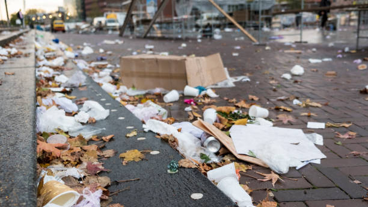
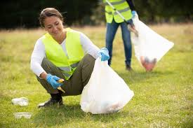
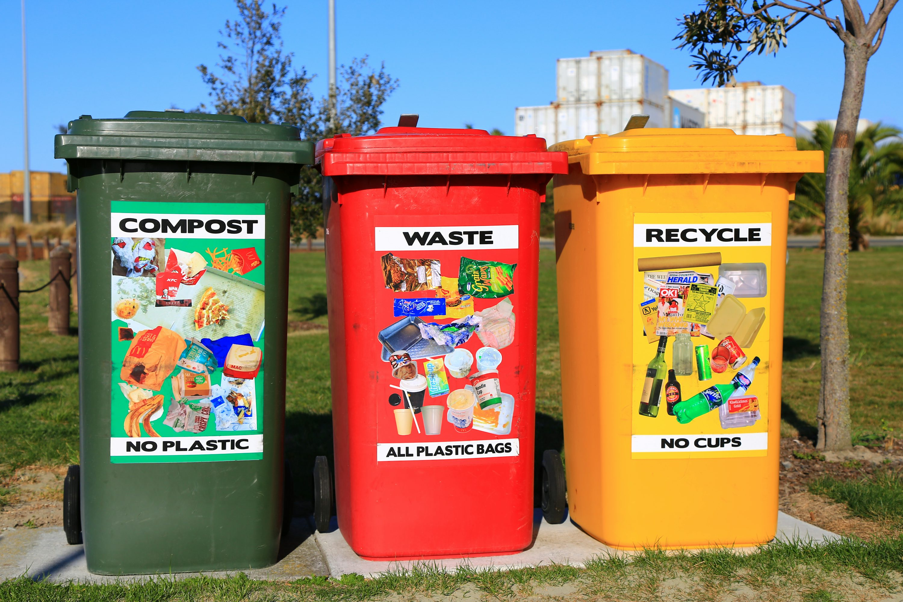
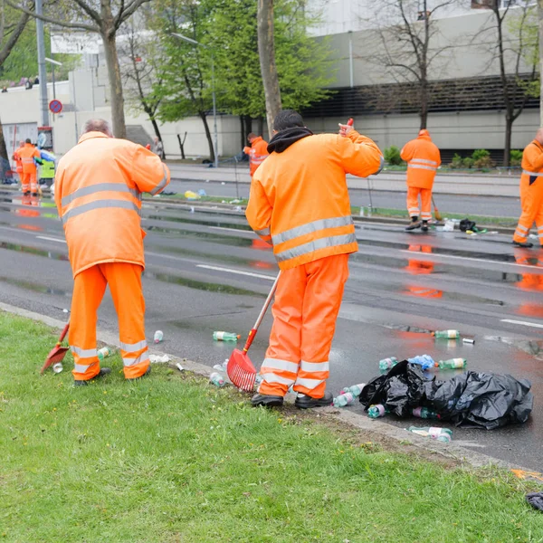

“Eliminar la basura de las calles”
por Sofía Tinoco Pérez
Problema

Mi tema es: eliminar la basura de las calles. Es relevante ya que es una problemática que afecta tanto a la población de la colonia como a la logística de los residuos a nivel municipal y estatal del gobierno. Su propósito principal es evitar que los residuos que se generan los días de mercado y fines de semana se acumulen en las calles a través de estrategias basadas en la participación ciudadana, concientización y mesas de trabajo con las autoridades. Este proyecto busca involucrar a vecinos y funcionarios gubernamentales para mejorar la gestión de residuos, evitar que las coladeras se tapen y mejorar la imagen de la colonia.
Objetivo General

Reducir la basura en las calles con apoyo de los vecinos y las autoridades mediante estrategias como programas educativos, instalación de contenedores y gestión adecuada de residuos.
Objetivos Específicos

Propuestas de Solución

Para abordar este problema, proponemos:
- Implementar campañas de concientización sobre el manejo adecuado de residuos sólidos.
- Organizar jornadas de limpieza comunitaria con apoyo de vecinos y autoridades locales.
- Desarrollar programas educativos en escuelas sobre el impacto ambiental de la basura.
- Establecer un sistema de monitoreo para reportar acumulaciones de basura y acciones rápidas de limpieza.